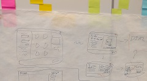

DIA2
I worked on DIA2 as the front-end developer and collaborated with the UX team to build on and improve the website.
My work included the DIA2 homepage, several updates to the main visualisation tool page, and the implementation of DIA2's user login and registration.
Here are some of my contributions to DIA2.
-
Collaborative Revisions

When I started implementing the UX team's revision of DIA2, I found that the designer's comp had a higher resolution than the web's default 72dpi.
The dimensions for the layout couldn't be implemented as they were - some elements didn't leave room for their contents, and margins needed to be adjusted.
I contacted the team's visual designer and asker her to help me adjust the layout for the contents. Together we adjusted the new layout without compromising the design.
We also ensured that elements not easily communicated in the comp, such as box-shadows and gradients, were translated faithfully to CSS.
-
User Advocacy
When the UX team was first designing the user workflow for DIA2's login implementation, the team wanted to include about ten fields for user registration.
The fields the team wanted seemed excessive to me and unnecessary to DIA2's available features. I argued that for basic use cases, we only really needed email and a password.
I discussed my concerns with the team and we compromised on five fields that we agreed were necessary for the user and for our organizational needs. Any other info we needed from the user could be requested later.
-
Login Implementation
While the UX team was working on the workflow and design for user login and registration, I was working with the technical team to design the user database.
We needed to store user logins and passwords, store their data, confirm their email addresses, and give users the option to reset their password.
I designed the database structure with a teammate on the technical team and implemented user registration and login from scratch.
I created the MySQL database and tables, wrote the back-end PHP files, and implemented the login and registration forms on the front-end.
-
Ease of Use
As the UX team and I iterated and reviewed DIA2's design, we often found bugs and room for improvement for design.
One of these issues was a drop-down menu containing buttons to log in / out and to launch a guide for the user. This menu worked inconsistently at best, and wasn't its interactivity wasn't clear.
Because the ability to log in or out and opening this guide are important for the user, I removed these items from the drop down and arranged them instead in the upper menu bar.
Because these items aren't used for the same purpose as any of DIA2's other widgets or controls, I aligned these user controls to the right, separate from the rest.
See for yourself
Learn more about the team, the design and research behind DIA2, and try it out for yourself.
DIA2 homepage